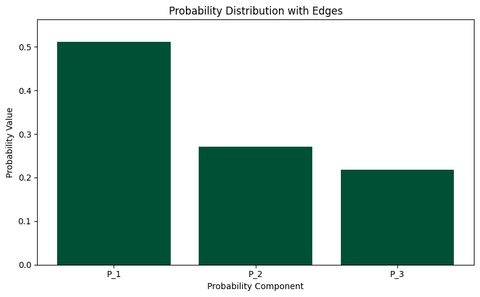
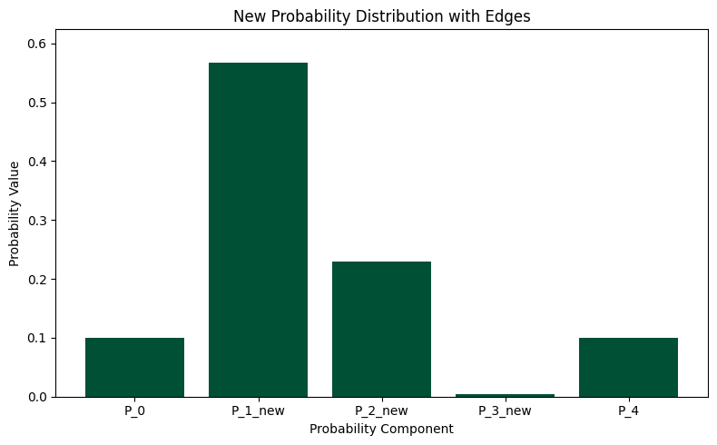

Expectations and Uncertainty in Energy for Superposition of Energy Eigenstates Practice Walk Through with Asymmetric Probabilities#
import numpy as np
from numpy import linalg as la
import scipy.constants as const
Ψ1 Probability Distribution#
Where Pn are the probabilities summing to 1 that represent the distribution of probablity that exists within the superposition of Ψ1.
The Energy Eigenstates \(E_n = n + 1/2\).
The Average Energy Expectation Value \(<E>\) is found using:
#Run to generate random probability distribution:
from re import A
fractions = np.random.dirichlet(np.array([1, 1, 1]))
P_1=fractions[0]
P_2=fractions[1]
P_3=fractions[2]
print(P_1,P_2,P_3)
0.5113814531418278 0.2710484694647942 0.2175700773933779
#Run to visualize the distribution:
import matplotlib.pyplot as plt
import numpy as np
# Combine the probabilities into a list
probabilities = [ P_1, P_2, P_3]
# Labels for the x-axis
labels =[ 'P_1', 'P_2', 'P_3']
# Create the bar chart
fig, ax = plt.subplots(figsize=(8, 5))
ax.bar(labels, probabilities, color='#005035')
ax.set_xlabel('Probability Component')
ax.set_ylabel('Probability Value')
ax.set_title('Probability Distribution with Edges')
ax.set_ylim(0, max(probabilities) * 1.1) # Set y-axis limit slightly above max value
plt.tight_layout()
plt.show()

Using these probabilities we can calculate the average energy expectation value \(<E>\):
Recall:
Step 1:
\begin{align*} \langle \Psi_1 | \hat{H} | \Psi_1 \rangle &= \sqrt{P_1},\langle \Psi_1 | \hat{H} | \psi_1\rangle
\sqrt{P_2},\langle \Psi_1 | \hat{H} | \psi_2\rangle
\sqrt{P_3},\langle \Psi_1 | \hat{H} | \psi_3\rangle \ &= \sqrt{P_1} E_1 \langle \Psi_1 | \psi_1\rangle
\sqrt{P_2} E_2 \langle \Psi_1 | \psi_2\rangle
\sqrt{P_3} E_3 \langle \Psi_1 | \psi_3\rangle \end{align*}
Step 2:
Interact \(Ψ_1\) with each \(ψ_n\), Example with \(ψ_1\):
\begin{align*} \langle \Psi_1 | \psi_1 \rangle &= \sqrt{P_1}^{,*} \langle \psi_1 | \psi_1 \rangle
\sqrt{P_2}^{,*} \langle \psi_2 | \psi_1 \rangle
\sqrt{P_3}^{,} \langle \psi_3 | \psi_1 \rangle \ &= \sqrt{P_1}^{,}\cdot 1
\sqrt{P_2}^{,*}\cdot 0
\sqrt{P_3}^{,}\cdot 0 = \sqrt{P_1} \end{align}
Step 3:
\begin{align*} \langle \Psi_1 | \hat{H} | \Psi_1 \rangle &= \sqrt{P_1} E_1 \sqrt{P_1}
\sqrt{P_2} E_2 \sqrt{P_2}
\sqrt{P_3} E_3 \sqrt{P_3} \ &= P_1 E_1 + P_2 E_2 + P_3 E_3 \end{align*}
Calculate the Average Energy Expectation Value for the set of probabilities generated.
#Run to check your Average Energy Expectation <E>=E_x1 :
def E(n):
return n + 1/2
def E_x1():
return P_1*E(1)+P_2*E(2)+P_3*E(3)
print("Average Energy Expectation Value:",P_1*E(1)+P_2*E(2)+P_3*E(3))
Average Energy Expectation Value: 2.20618862425155
Ψ2 Probability Distribution#
Where Pn are the probabilities summing to 1 that represent the distribution of probablity that exists within the superposition of Ψ2.
The \(<E>\) is found using:
# Generate a new probability distribution proportional to the original:
fractions = np.random.dirichlet([5, 5, 1])
P_1, P_2, P_3 = fractions
print(f"Original distribution:")
print(f"P_1: {P_1:.4f}")
print(f"P_2: {P_2:.4f}")
print(f"P_3: {P_3:.4f}")
print(f"Sum: {sum([P_1, P_2, P_3]):.4f}")
# Generate P_0 and P_4 by scaling down the middle three
middle_fraction = 0.8 # Middle three will take up 80% instead of 100%
edge_fraction = (1 - middle_fraction) / 2 # Split remaining 20% between edges
P_0 = edge_fraction
P_1_new = P_1 * middle_fraction
P_2_new = P_2 * middle_fraction
P_3_new = P_3 * middle_fraction
P_4 = edge_fraction
print(f"\nNew distribution with edges:")
print(f"P_0: {P_0:.4f}")
print(f"P_1: {P_1_new:.4f}")
print(f"P_2: {P_2_new:.4f}")
print(f"P_3: {P_3_new:.4f}")
print(f"P_4: {P_4:.4f}")
print(f"Sum: {sum([P_0, P_1_new, P_2_new, P_3_new, P_4]):.4f}")
Original distribution:
P_1: 0.7089
P_2: 0.2863
P_3: 0.0049
Sum: 1.0000
New distribution with edges:
P_0: 0.1000
P_1: 0.5671
P_2: 0.2290
P_3: 0.0039
P_4: 0.1000
Sum: 1.0000
import matplotlib.pyplot as plt
import numpy as np
# Combine the new probabilities into a list
new_probabilities = [P_0, P_1_new, P_2_new, P_3_new, P_4]
# Labels for the x-axis
labels = ['P_0', 'P_1_new', 'P_2_new', 'P_3_new', 'P_4']
# Create the bar chart
fig, ax = plt.subplots(figsize=(8, 5))
ax.bar(labels, new_probabilities, color='#005035')
ax.set_xlabel('Probability Component')
ax.set_ylabel('Probability Value')
ax.set_title('New Probability Distribution with Edges')
ax.set_ylim(0, max(new_probabilities) * 1.1) # Set y-axis limit slightly above max value
plt.tight_layout()
plt.show()

Using these probabilities we can calculate \(<E>\):
Step 1:
\begin{align*} \langle \Psi_2 | \hat{H} | \Psi_2 \rangle &= \sqrt{P_0},\langle \Psi_2 | \hat{H} | \psi_0\rangle
\sqrt{P_1},\langle \Psi_2 | \hat{H} | \psi_1\rangle
\sqrt{P_2},\langle \Psi_2 | \hat{H} | \psi_2\rangle
\sqrt{P_3},\langle \Psi_2 | \hat{H} | \psi_3\rangle
\sqrt{P_4},\langle \Psi_2 | \hat{H} | \psi_4\rangle\ &= \sqrt{P_0},\langle \Psi_2 | \hat{H} | \psi_0\rangle
\sqrt{P_1} E_1 \langle \Psi_2 | \psi_1\rangle
\sqrt{P_2} E_2 \langle \Psi_2 | \psi_2\rangle
\sqrt{P_3} E_3 \langle \Psi_2 | \psi_3\rangle
\sqrt{P_4},\langle \Psi_2 | \hat{H} | \psi_4 \rangle \end{align*}
Step 2:
Interact \(Ψ_2\) with each \(ψ_n\), Example with \(ψ_0\): \begin{align*} \langle \Psi_2 | \psi_0 \rangle &= \sqrt{P_0}^{,*} \langle \psi_0 | \psi_0 \rangle
\sqrt{P_1}^{,*} \langle \psi_1 | \psi_0 \rangle
\sqrt{P_2}^{,*} \langle \psi_2 | \psi_0 \rangle
\sqrt{P_3}^{,*} \langle \psi_3 | \psi_0 \rangle
\sqrt{P_4}^{,} \langle \psi_4 | \psi_0 \rangle \ &= \sqrt{P_0}^{,}\cdot 1
\sqrt{P_1}^{,*}\cdot 0
\sqrt{P_2}^{,*}\cdot 0
\sqrt{P_3}^{,*}\cdot 0
\sqrt{P_4}^{,}\cdot 0 = \sqrt{P_0} \end{align}
Step 3:
\begin{align*} \langle \Psi_2 | \hat{H} | \Psi_2 \rangle &= \sqrt{P_0} E_0 \sqrt{P_0}
\sqrt{P_1} E_1 \sqrt{P_1}
\sqrt{P_2} E_2 \sqrt{P_2}
\sqrt{P_3} E_3 \sqrt{P_3}
\sqrt{P_4} E_4 \sqrt{P_4}\ &= P_0 E_0 + P_1 E_1 + P_2 E_2 + P_3 E_3 + P_4 E_4 \end{align*}
#Run to check your Average Energy Expectation <E>=E_x2 :
def E(n):
return n + 1/2
def E_x2():
return P_0*E(0)+P_1_new*E(1)+P_2_new*E(2)+P_3_new*E(3)+P_4*E(4)
print("Average Energy Expectation Value:",P_0*E(0)+P_1_new*E(1)+P_2_new*E(2)+P_3_new*E(3)+P_4*E(4))
Average Energy Expectation Value: 1.9368140948389803
Now the average deviation for both \(Ψ_1\) and \(Ψ_2\) must be calculated using:
These values can be compared to demonstrate change in average deviation when using more terms in the aproximation.
For \(Ψ_1\) the \(<E^2>\) calculation is as follows:
\begin{align*} \langle E^2 \rangle &= \sqrt{P_1},\langle \Psi_1 | \hat{H}\hat{H} | \psi_1 \rangle
\sqrt{P_2},\langle \Psi_1 | \hat{H}\hat{H} | \psi_2 \rangle
\sqrt{P_3},\langle \Psi_1 | \hat{H}\hat{H} | \psi_3 \rangle \[4pt] \end{align*}
\begin{align*} &= \sqrt{P_1},E_1 ,\langle \Psi_1 | \hat{H} | \psi_1 \rangle
\sqrt{P_2},E_2 ,\langle \Psi_1 | \hat{H} | \psi_2 \rangle
\sqrt{P_3},E_3 ,\langle \Psi_1 | \hat{H} | \psi_3 \rangle \[4pt] \end{align*}
\begin{align*} &= \sqrt{P_1},E_1^{2} ,\langle \Psi_1 | \psi_1 \rangle
\sqrt{P_2},E_2^{2} ,\langle \Psi_1 | \psi_2 \rangle
\sqrt{P_3},E_3^{2} ,\langle \Psi_1 | \psi_3 \rangle \[4pt] &= P_1 E_1^{2} + P_2 E_2^{2} + P_3 E_3^{2} ,. \end{align*}
#Run this code to check your <E^2>=E_x1_squared for Ψ1:
def E_squared(n) :
return (n + 1/2)**2
def E_x1_squared():
return P_1*E_squared(1)+P_2*E_squared(2)+P_3*E_squared(3)
print("Average Energy Squared Expectation Value:",P_1*E_squared(1)+P_2*E_squared(2)+P_3*E_squared(3))
Average Energy Squared Expectation Value: 3.4438274960040034
#Run to check your Average Deviation Ψ1:
def E_delta():
return np.sqrt(E_x1_squared()-E_x1()**2)
print("Average Deviation:",np.sqrt(E_x1_squared()-E_x1()**2))
Average Deviation: 0.46706338955924165
For \(Ψ_2\) the \(<E^2>\) calculation is as follows:
\begin{align*} \langle E^2 \rangle &= \sqrt{P_0},\langle \Psi_2 | \hat{H}\hat{H} | \psi_0 \rangle
\sqrt{P_1},\langle \Psi_2 | \hat{H}\hat{H} | \psi_1 \rangle
\sqrt{P_2},\langle \Psi_2 | \hat{H}\hat{H} | \psi_2 \rangle
\sqrt{P_3},\langle \Psi_2 | \hat{H}\hat{H} | \psi_3 \rangle
\sqrt{P_4},\langle \Psi_2 | \hat{H}\hat{H} | \psi_4 \rangle\[4pt] \end{align*}
\begin{align*} &= \sqrt{P_0},E_0 ,\langle \Psi_2 | \hat{H} | \psi_0 \rangle
\sqrt{P_1},E_1 ,\langle \Psi_2 | \hat{H} | \psi_1 \rangle
\sqrt{P_2},E_2 ,\langle \Psi_2 | \hat{H} | \psi_2 \rangle
\sqrt{P_3},E_3 ,\langle \Psi_2 | \hat{H} | \psi_3 \rangle
\sqrt{P_4},E_4 ,\langle \Psi_2 | \hat{H} | \psi_4 \rangle\[4pt] \end{align*}
\begin{align*} &= \sqrt{P_0},E_0^{2} ,\langle \Psi_2 | \psi_0 \rangle
\sqrt{P_1},E_1^{2} ,\langle \Psi_2 | \psi_1 \rangle
\sqrt{P_2},E_2^{2} ,\langle \Psi_2 | \psi_2 \rangle
\sqrt{P_3},E_3^{2} ,\langle \Psi_2 | \psi_3 \rangle
\sqrt{P_4},E_4^{2} ,\langle \Psi_2 | \psi_4 \rangle\[4pt] &= P_0 E_0^{2} + P_1 E_1^{2} + P_2 E_2^{2} + P_3 E_3^{2} + P_4 E_4^{2} ,. \end{align*}
#Run this code to check your <E^2>=E_x2_squared for Ψ2:
def E_squared(n) :
return (n + 1/2)**2
def E_x2_squared():
return P_0*E_squared(0)+P_1_new*E_squared(1)+P_2_new*E_squared(2)+P_3_new*E_squared(3)+P_4*E_squared(4)
print("Average Energy Squared Expectation Value:",(P_0*E_squared(0)+P_1_new*E_squared(1)+P_2_new*E_squared(2)+P_3_new*E_squared(3)+P_4*E_squared(4)))
Average Energy Squared Expectation Value: 4.805061996803202
#Run to check your Average Deviation Ψ2:
def E_delta():
return np.sqrt(E_x2_squared()-E_x2()**2)
print("Average Deviation:",np.sqrt(E_x2_squared()-E_x2()**2))
Average Deviation: 1.026554021392086